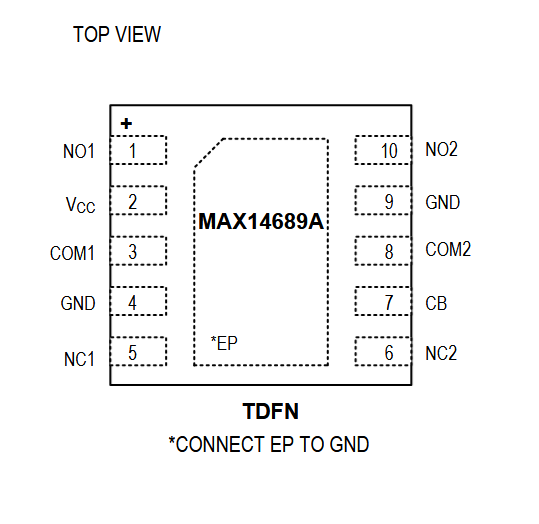

MAX14689

Pin Description
| PIN | NAME | FUNCTION |
|---|---|---|
| 5 | NC1 | Normally Closed Terminal for Switch 1 |
| 7 | CB | Digital Control Input. Drive CB low to connect COM_ to NC_. Drive CB high to connect COM_ to NO_. |
| 6 | NC2 | Normally Closed Terminal for Switch 2 |
| 3 | COM1 | Common Terminal for Switch 1 |
| 4, 9 | GND | Ground |
| 8 | COM2 | Common Terminal for Switch 2 |
| 1 | NO1 | Normally Open Terminal for Switch 1 |
| 2 | VCC | Supply Voltage Input. Bypass VCC to GND with a 0.1μF capacitor as close to the device as possible. |
| 10 | NO2 | Normally Open Terminal for Switch 2 |
| - | EP | Exposed Pad. Connect EP to ground. (TDFN only) |